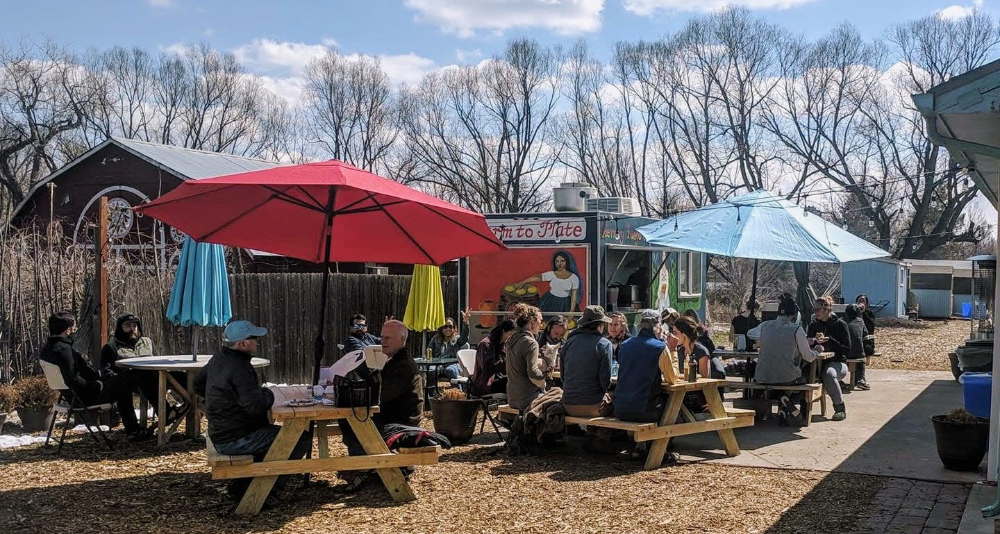

Private Events at the Diaz Farm
The Diaz Farm has been home to Tierra y Fuego Taqueria’s food truck since 2018. Originally an outdoor public venue, the Diaz Farm now hosts private events seasonally with its Tierra y Fuego Taqueria food truck serving up traditional Mexican F&B for your special event.

At the Diaz Farm, we host a wide variety of events--from work events to milestone birthdays, graduation parties, or rehearsal dinners and can cater to your event’s style.
Click below to reserve your event date at the Diaz Farm and our event coordinator will be in touch to discuss the details.